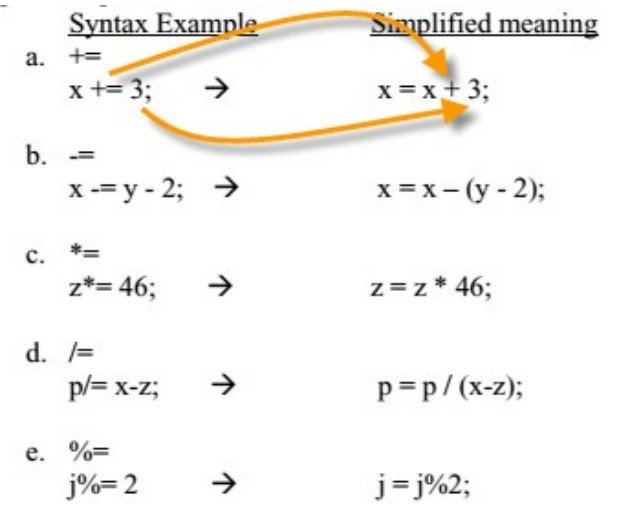

Recall that the assignment operator is the standard equal sign (=) and is used to “assign” a value to a variable.
Consider the following example,
int i = 3; //OK. Assigns the value of 3 to i. Notice the direction of data flow.
3 = i; //Illegal. Data does not flow this way.
double p;
double j = 47.12;
p = j; //OK. Assigns the value of j to p. Both p and j are now equal to 47.12
It is possible to declare several variables of the same type on one line. In the below example, i, x, y, and z are all declared as int type variables.
int i, x, y, z;
We can also declare and initialize variables on one line. In the example below, w and j, are both declared and initialized. g however is just declared.
int w = 1000, j = 2000, g;
The basic arithmetic operations are as follows,
| Operator | Description |
|---|---|
| + | addition |
| - | substraction |
| * | multiplication |
| / | division |
| % | modulus |
Examples of how each of the above operators can be applied are illustrated below,
Addition
int x = 1;
int y = 2;
int z = x + y;//3 is assigned to z
x = x + z;//4 is re-assigned to x
System.out.println(z);//3 is printed to the console
System.out.println(x + y);//6 is printed to the console
System.out.println(x + 10);//14 is printed to the console
System.out.println(10 + 10);//20 is printed to the console
Subtraction
int x = 1;
int y = 2;
int z = x - y;//-1 is assigned to z
x = x - z;//0 is re-assigned to x
System.out.println(z);//-1 is printed to the console
System.out.println(x - y);//-2 is printed to the console
System.out.println(x - 10);//-10 is printed to the console
System.out.println(10 - 10);//0 is printed to the console
Multiplication
int x = 1;
int y = 2;
int z = x * y;//2 is assigned to z
x = x * z;//2 is re-assigned to x
System.out.println(z);//2 is printed to the console
System.out.println(x * y);//4 is printed to the console
System.out.println(x * 10);//20 is printed to the console
System.out.println(10 * 10);//100 is printed to the console
Division
The below example illustrates how int type variables are treated. If the result of the division is a fraction, the decimal places are "cut off" - int variable types do not round.
int x = 1;
int y = 2;
int z = y/x;//2 is assigned to z
x = z/x;//2 is re-assigned to x
System.out.println(z);//2 is printed to the console
System.out.println(x/y);//1 is printed to the console
System.out.println(x/10);//0 is printed to the console
System.out.println(10/10);//1 is printed to the console
Modulus
Modulus prints the remainder of a division operation. For example, System.out.println(5%3); will print 2. This is because when 5 is divided by 3, the remainder is 2. Modulus gives the remainder. Modulus also handles negatives. The answer to a%b has the same sign as a. The sign of b is ignored..
int x = 1;
int y = 2;
int z = x%y;//1 is assigned to z
x = x%z;//0 is re-assigned to x
System.out.println(z);//1 is printed to the console
System.out.println(x%y);//0 is printed to the console
System.out.println(x%10);//0 is printed to the console
System.out.println(10/10);//0 is printed to the console
The unary operators are operations that require only one operand; they perform various operations such as incrementing/decrementing a value by one, negating an expression, or inverting the value of a boolean.
Incrementing a value by 1The code below illustrates how to increment the variable x by 1
int x = 1;
x = x + 1;//x is now 2
Incrementing a value by 1 can also be done using the ++ operator,
int x = 1;
System.out.println(x++);//1 is printed to the consol, then x is incremented
System.out.println(++x);//x is incremented first, then it's value, 3, is printed to the consol.
Notice in the above example that ++ can come before or after the variable. If it comes before the variable, the variable is first incremented then printed. If it comes after the variable, the variable is first printed then incremented.
Decrementing a value by 1The code below illustrates how to decrement the variable y by 1
int y = 10;
y = y - 1;//y is now 9
Decrementing a value by 1 can also be done using the -- operator,
int y = 10;
System.out.println(y--);//10 is printed to the consol, then y is decremented
System.out.println(--y);//y is decremented first, then it's value, 8, is printed to the consol
Notice in the above example that -- can come before or after the variable. If it comes before the variable, the variable is first decremented then printed. If it comes after the variable, the variable is first printed then decremented.
A compound assignment operator is an operator that performs a calculation and an assignment at the same time. In the below example, x can be re-assigned explicitely using x = x + 5; x can also be re-assigned using the addition compound operator.
int x = 10;
x = x + 5;//x is 15
x += 5;//x is now 20
Compound operators can be applied to all the arithmetic operations. How this is done is illustrated below,
The algebra rule, PEMDAS, applies to computer computations as well. (PEMDAS stands for the order in numeric operations are done. P = parenthesis, E = exponents, M = multiply, D = divide, A = add, S = subtract. Actually M and D have equal precedence, as do A and S. For equal precedence operation, proceed from left to right. A mnemonic for PEMDAS is, “Please Excuse My Dear Aunt Sally)
The example below illustrates PEMDAS
System.out.println(5 + 3 * 4 – 7); //prints out 10
System.out.printly(8 – 5 * 6 / 3 + (5 – 6) * 3); //prints out -5